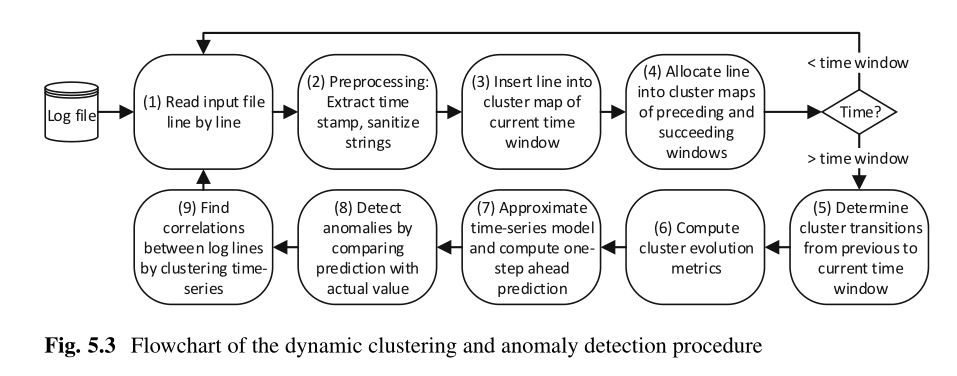
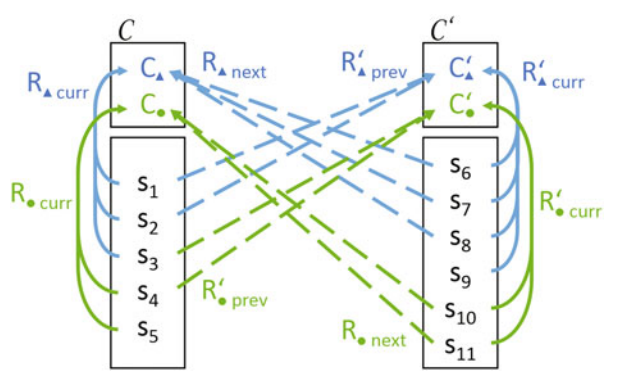
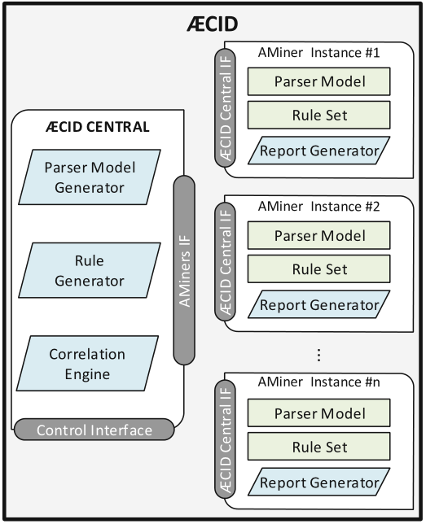
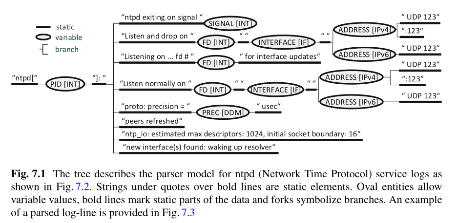

希望对日志分析有个大致的了解，尝试学习了《Smart Log Data Analytics: Techniques for Advanced Security Analysis》一书，并就其中一些算法和思路进行整理，学习其中提到的 AECID 轻量级日志分析方案
书中按复杂程度依次介绍的几种日志处理工具包括：增量聚类、模板生成、时序分析以及基于树的日志解析器等，通过组合这些工具能够实现实时的日志异常检测，并且在此基础之上也能更好的进行日志分析的学习
- 日志文件通常由一组以时序列出的单行或多行字符串（日志消息）组成，其中时序通常通过附加的时间戳来体现
- 日志消息可以是高度结构化的（逗号分隔的值列表）、部分结构化的（键值对）、非结构化的（任意长度的自然文本）或者三者的组合
- 日志消息有时包括与其生成相关任务的进程id
- 日志消息有时包含行号、消息级别、严重性指示符以及静态标识符等信息
增量聚类
关于日志聚类
静态聚类：聚类单个日志行（会忽略行之间的顺序和依赖关系）
动态聚类：对日志序列进行模式提取（书中没有过多涉及，但是似乎目前研究的主要方向，DeepLog、LogSed等方法都属于动态聚类）
期望通过聚类解决的异常类型：
- 离群值：单个日志行，不匹配现有模板或者不像已知的表示正常系统行为的类（静态聚类）
- 频率异常：意外频繁或罕见的日志事件
- 相关性异常：预期成对或成组发生但未发生的日志事件
- 时间间隔异常：关联事件相继发生的时间间隔出现偏差
- 序列异常：模式中发生的日志事件序列偏离顺序
其中，书中介绍的两种增量聚类方案（基于字符串度量的增量聚类和基于数值距离度量增量聚类）属于静态聚类，将类似的日志行归于同一个类簇
基于字符串度量的增量聚类
增量聚类能够实现在线的日志聚类，在实际场景中，日志往往是一条一条生成的，需要我们以日志流的形式进行快速处理
日志的增量聚类方案会选择某一条日志作为类簇的中心，并将与该日志相似度在阈值之上的日志行加入该类簇
那么，假设当前日志为一条日志，或者称为日志线，每一条日志便以如下流程进行聚类
日志清洗（去除非常规符号和一些占位符）
判断是否为当前的聚类中心（正好与作为聚类中心的日志行则直接归入该类簇）
否则需要筛选合适的聚类中心并加入
长度过滤：聚类中心日志的长度要接近当前日志长度，过滤长度过短过长的聚类中心
短词过滤：聚类中心日志和当前日志长度为k的相同子串的数量需要大于M，过滤明显不相似的聚类中，其中 $M = L - k + 1 - (1 - p)kL$ ，$k$由聚类的相似度参数确定，$L = max(|l|,|c|)$，其中$|l|$表示当前日志的长度，$|c|$表示聚类中心日志长度，每次过滤复杂度 $O(|l|-k)$
计算字符串相似度指标：Levenshtein为例，通过动态规划计算两个字符串增删改完成相互转化的最少步骤，作为字符串之间的距离$d$，$1 - d/max(|a|,|b|)$作为字符串之间的相似度，复杂度$O(|a||b|)$
训练阶段：找到满足条件的类簇，有则选择相似度最高的加入，否则建立新的类簇，自己作为聚类中心
检测阶段（白名单）：如果未能找到足够相似的聚类中心，则认为是异常日志
基于数值距离度量的增量聚类
将日志文本转换成一系列数值来实现基于欧式空间的聚类，简单的转换例子即对每个字符在日志线上出现的次数进行统计，将整个日志出现不同字符的数量作为空间的维数
PCA主成分分析进行降维，具体PC维度取决于数据和原始维数
与上一种方案不同，这里需要预先取一部分（多行）日志计算转移矩阵来保证PCA降维的效果
时序分析
根据在固定时间窗口内各个类簇的增长情况作为异常判断的一个方向（针对小簇问题，将离群点添加到一个新的类中进行异常检测），具体参见下面的时序异常检测部分
日志模板生成
目标：生成一个模板，能对相似日志的静态部分进行标记，其他部分使用通配符替换
主要挑战：序列对齐
基于词元的模板生成器
- 词元可能是一个单词，通过对日志中的单词进行分隔，找到对所有日志行都存在且出现顺序一致的单词组合作为模板
- 当前主流的模板生成方案，更高性能，但依赖当前的日志数据，能够防止高度相似的子字符串对应的词元成为模板的一部分
- 后面介绍的基于树的日志解释器生成算法采用的就是基于词元的方案
基于字符的模板生成器
- 主要挑战：需要计算多行序列比对
- 主要方案：先对两行生成模板，再逐行增量的调整模板
- 基于字符的算法：merge、length、equalmerge
- 融合词元和字符的算法：token_char
大致思路：类似之前的Levenshtein算法，递归计算两个字符串增删改完成相互转化的最少步骤，称为LV距离，并记录在递归矩阵中的转化路径，这些转化过程便代表两个字符串不同的位置，而通过递归计算最少步骤则最大程度保证保留两个字符串的相同部分
在拿到递归矩阵和转化路径后通过重新走一遍该路径来确定模板，其中
- 矩阵走对角，对应改操作或者当前位置字符相同，仅当当前字符相同时将该字符加入模板，否则以空格（占位符）表示
- 矩阵向下或向右走，对应增删操作，当前位置以空格表示（注意如果模板前一位已经是空格，则没必要再加一个，一个空格在模板中匹配任意长度的子串）
Merge算法：直接在之后每一行日志完成一次上述过程，并保证新模板没有丢失前一个模板的空格
Length算法：只计算模板块和对应日志子串的LV距离
EqualMerge算法：相较Length算法，只是在出现多个相邻的未标记字符串时会进行聚合再计算距离，一定程度上提升了模板质量
Token_char算法：对日志根据词元进行分隔后对词元间的子串建立字符结构提取模板
时序异常检测
这边的时序异常检测主要是考虑到日志间的动态关系和集群映射会随时间进行改变，来建立跨集群映射的动态特征，从而实现涉及集群演化和时序分析的动态日志分析，大致流程如下图所示
- 流式读取每一行日志
- 日志清洗
- 在每个时间窗口内根据相似度进行聚类
- 通过将日志行分配到相邻时间窗口的集群，来建立跨时间窗口的连接
- 当一个时间窗口结束后，对集群进行再处理来避免集群演化过程中出现分裂和合并的情况
- 计算时间窗口下集群的演化指标
- 建立时序预测模型并进行一步预测
- 通过将预测与真实值比较来进行异常检测

为了体现集群演化，并且对不正常的演化进行异常检测，这里提出了下面的概念
Tracking跟踪：在将当前时间窗口的日志分配给邻近时间窗口的集群时，会出现有的日志找不到合适的集群，基于此，建立指标 $overlap(C,C^{‘})=\frac{|(R_{curr} \cap R_{prev}^{‘}) \cup (R_{next} \cap R_{curr}^{‘})|}{|R_{curr}^{‘} \cup R_{prev}^{‘} \cup R_{next} \cup R_{curr}|}$ ，表示邻近时间窗口间的集群的可转化性

Transitions转化：包括只影响单个时间窗口单个集群的内部转化和影响其他时间窗口集群的外部转化，这里通过对集群进行再分割和再合并（直到overlap达到阈值）来解决集群演化过程中出现的分裂和合并过程对计算演化指标等产生的负面影响
演化指标：建立能够描述连续窗口间的相互依赖和演化关系的指标，例如 $s=\frac{|R_{prev}^{‘}|+|R_{curr}|-2 |R_{prev}^{‘} \cap R_{curr}|}{|R_{prev}^{‘}|+|R_{curr}|}$ 来反映集群的稳定性
书中推荐了ARIMA 作为时序预测的算法
AECID
AECID:A Light-Weight Log Analysis Approach for Online Anomaly Detection

AECID的系统架构如上图所示，主要包括两个组件AMiner和AECID CENTRAL，其中AMiner负责进行在线的异常检测，使用基于树的解释器进行日志行的高效解析，而AECID Central负责根据正常的日志训练解析器模型并分发给AMiner实例
AECID主要使用基于树的日志解析器生成算法，算法使用类似决策树的生成模式，将静态部分作为树的节点，可变部分作为树的分支生成与日志对应的树进行后续异常，这样大大降低解析的复杂度，在O(logn)的复杂度内处理一条日志
生成的树如下图所示，基于此，我们可以简单的将树的路径转化为正则表达式进行数据处理，也可以对日志进行快速解析，提取可变部分（重要信息）来进行进一步的分析（关联分析等）
AECID实际使用的日志解析器生成算法时AECID-PG:Tree-Based Log Parser Generator，使用了基于密度的解析器生成算法，使用词元频率（而不是距离度量）来确定当前部分时静态的还是可变的，对可变部分进行树的分叉

于是，有赖于使用的基于树的解析器生成算法，AECID支持如下功能
- 解析器模型通过学习正常系统行为的知识，能够检测当前日志事件和正常系统行为的偏差从而进行异常检测
- 基于签名的异常检测，提供基于统计数据（频率）的异常检测
- 支持基于统计特征的时序检测
- 支持规则生成器
- 支持关联引擎，能够检测分布式网络节点事件的复杂异常
AECID-PG
基于密度的解析器生成算法大致流程
根据预定义的分隔符将日志分隔成一系列词元
将多条日志作为行，每条日志的一系列词元作为列建立Table，基于这个Table建立解析树
根据下面的四条规则来判断当前节点树的生长方式（生成的节点类型以及是否建立多个分支）
使用 $PF_{ij}^k=\frac{|n_j^{k+1}|}{|n_i^k|}$ 来表示路径频率 path-frequency，反映了流入 $n_i^k$ 的日志中又流入 $n_j^{k+1}$ 的比例，其中 $n$ 的上下标分别对应Table的列号和行号
规则1：$\lbrace n_j^{k+1}:\exists e_{ij}^k \wedge PF_{ij}^k \geq \theta _1 \rbrace=\varnothing \Rightarrow VAR$ 各条边的路径频率都低于阈值，即下一个节点的值很分散，则认为树的下一个节点是个变量
规则2：如果 $| n_j^{k+1}:\exists e_{ij}^k \wedge PF_{ij}^k \geq \theta _1 |=1$ 存在一条边的路径频率较大，
对于该边，如果满足 $PF_{ij}^k \geq \theta _2$ 则对其建立静态节点，否则建立可变节点
规则3： 如果 $|n_j^{k+1}:\exists e_{ij}^k \wedge PF_{ij}^k \geq \theta _1| > 1$ 存在多条边路径频率较大，
如果这些边 $\sum_{j \in J}PF_{ij}^k \geq \theta _3$ 合计路径频率大于阈值则为每条边建立静态节点，否则建立可变节点
规则4：在一些日志已经结束的情况下，如果大于 $\theta _4$ 比例的日志结束了，则将之后的节点设为可选，如果没有小于 $\theta _5$ 比例的日志结束
阻尼机制